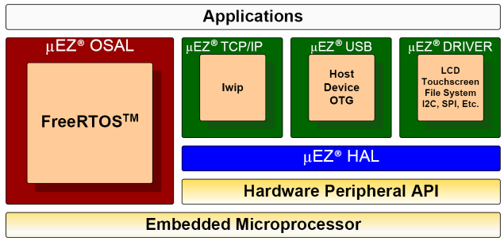

<div class="contents">
<div class="textblock">
<h2><a class="anchor" id="intro_sec"></a>What is &mu;EZ?</h2>
<p class="main">&mu;EZ is an open source, middleware platform so there is no cost to the user. Customers can directly integrate &mu;EZ into their embedded application for free or can contract with Future Designs to provide affordable integration services that are customized to your hardware and software requirements. Future Designs integration services are full turnkey and can cost as little as $10K and may require only 4 weeks of schedule time to complete and test. The goal of the &mu;EZ platform is to provide underlying RTOS and processor abstraction enabling the application programmer to focus on the value-added features of their product. &mu;EZ is an optional platform that enhances portability of application code to multiple ARM&copy; platforms with high reusability.</p>
<p class="main">The diagram below shows a typical embedded application stack. uEZ has three primary categories of components that help simplify embedded application development:</p>
<ol>
<li>Operating System Abstraction Layer (uEZ OSAL)</li>
<li>Sub-system drivers (uEZ TCP/IP, uEZ USB, uEZ Driver)</li>
<li>Hardware Abstraction Layer (uEZ HAL)</li>
</ol>

<p class="main">The OSAL is the primary component of &mu;EZ  and provides applications access to the following features in an OS-independent fashion:</p>
<ul>
<li>Pre-emptive multitasking core</li>
<li>Stack overflow detection options</li>
<li>Unlimited number of tasks</li>
<li>Queues</li>
<li>Semaphores (binary, counting, and mutex)</li>
</ul>
<p class="main">The Subsystem drivers utilize the abstracted RTOS OSAL functions to provide protected access to the processor peripherals. The Subsystem drivers also support direct usage of FreeRTOS when the &mu;EZ platform is not utilized. The HAL functions provide single-threaded unprotected access to the processor peripherals.  Customers can use the &mu;EZ  HAL routines provided by Future Designs or can write their own.  When written correctly, the HAL routines provide for RTOS and &mu;EZ independence.</p>
<h2><a class="anchor" id="intro_sec"></a>Processors</h2>
<p class="main">&mu;EZ  currently supports the following processor families:</p>
<ul>
<li>NXP LPC24xx (LPC2478 is the initial supported processor)</li>
<li>NXP LPC23xx family</li>
<li>NXP LPC1756</li>
<li>NXP LPC1768</li>
<li>NXP LPC1788</li>
<li>Renesas RX62N</li>
<li>Renesas RX63N</li>
<li>More processors to come..</li>
</ul>
<h2><a class="anchor" id="intro_sec"></a>RTOS</h2>
<p class="main">&mu;EZ  currently supports the following RTOS families:<p>
<ul>
<li>FreeRTOS (version 7.0.1)</li>
<li>Micrium uC/OS-II</li>
</ul>
</div></div>